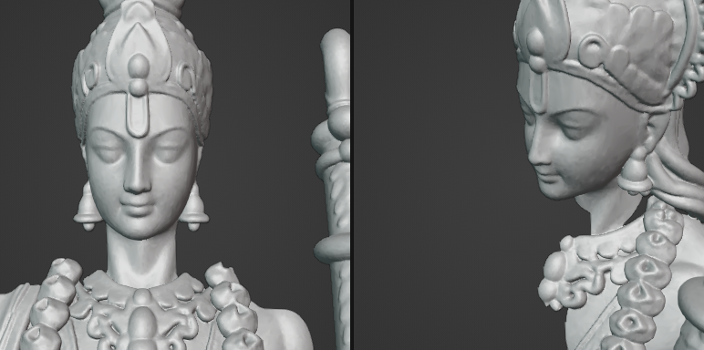

Lord Kodanda Rama (6-Inch Master Sculpt)



The Engineering Challenge
The client required a faithful 3D sculpture of Kodanda Rama based on a classical polychrome idol photograph. The raw AI generation had broken geometry, severe limb pinches, and hallucinated hand rods.
Nexray 3D restructured the entire mesh: sculpted a 4-arrow fanned quiver behind the right shoulder, freed the right hand into a serene Varada Mudra, unified the Kodanda bow stave, and calibrated the base plate to a flat plane at Z = 0.00 mm.
| Target Physical Scale | 152.40 mm (6.00" Exact) |
| Polygon Count | 2,206,298 Triangles |
| Topology Verification | 100% Watertight Manifold |
| Print Compatibility | Bambu / OrcaSlicer (FDM) & Chitubox (SLA) |
| Deliverable Format | Binary STL (.zip 42 MB / Direct 73 MB) |
Additional Studio Capabilities
From sacred heritage art to industrial prototyping, we prepare assets for high-end additive manufacturing.

Temple Murti & Deity Restorations
Converting temple reference photos and scriptures into museum-grade 3D printable STL files with intricate jewelry and drape folds.

Articulated & Hero Figurines
High-character sculpts with balanced centers of gravity and keyed assembly joints for multi-part resin and FDM printing.
Mesh Repair & Slicer Optimization
Fixing non-manifold tears, inverting inverted face normals, closing holes, and decimation while preserving 100% surface sharpness.